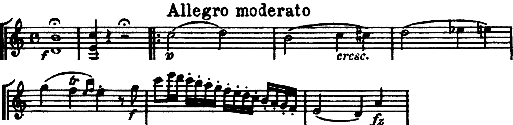

Il cromatismo di passaggio riempie un tono con due semitoni, uno cromatico e uno diatonico: si canta pensando la nota d’arrivo.
La nota di passaggio e la nota di volta superiore non possono essere alterate senza provocare una modulazione. Ma la nota di volta inferiore non iscuote la tonalità.
Théodore Dubois, Trattato di contrappunto e fuga, p. 14
C10Note di passaggio e di volta, pp. 298–299 · C3Gli intervalli giusti, p. 246
Sezione C, unità 10, lezione 31; unità 3, lezione 11 (la prima aumentata, cioè il semitono cromatico).
«Il semitono diatonico è formato da due gradi congiunti della scala […]. Il semitono cromatico è invece sempre formato da due note dello stesso nome, una delle quali ha subito l’effetto di un’alterazione» (Pozzoli–Zauli, Teoria musicale, vol. 1, p. 60). Il cromatismo di passaggio è una nota di passaggio alterata che divide un tono in due semitoni: fa–fa♯–sol (cromatico, poi diatonico). Salendo si scrive con il diesis o il bequadro che alza, scendendo con il bemolle o il bequadro che abbassa: si–si♭–la.
Prima parlato, in tempo. Poi cantato con il pianoforte che dà la tonica a ogni battuta; poi senza. Il cromatismo si canta come una nota che «tende»: il fa♯ verso il sol, il si♭ verso il la.
Il semitono cromatico cantato troppo stretto, quasi una nota ripetuta: il fa♯ resta attaccato al fa. Oppure troppo largo, e il semitono diatonico che segue sparisce: fa–sol–sol. Il riferimento è la nota d’arrivo, che si ascolta interiormente prima di cantare il cromatismo.
Per Dubois la nota di passaggio e la volta superiore alterate fanno sentire un’altra tonalità: do–do♯–re, in do, fa pensare al re; la volta inferiore cromatica, invece, «non iscuote la tonalità» (Trattato di contrappunto e fuga, p. 14): re–do♯–re resta un re abbellito da una sensibile provvisoria, a distanza di semitono diatonico.
Si canta due volte. Alla seconda il gruppo dei contralti tiene a bocca chiusa la nota abbellita (re, si, mi) mentre gli altri cantano la volta: il do♯ si sente sotto il re tenuto.
L’Allegro moderato del Quartetto op. 74 n. 1, in do maggiore, comincia con due accordi; dalla b. 3 il violino primo sale per grado sopra il do ribattuto del violoncello, e alla b. 4 riempie il tono do–re con il do♯, alla b. 5 il tono re–mi con una nota scritta mi♭. La viola, in chiave di contralto, fa lo stesso una sesta sotto alla b. 5: fa–fa♯–sol. Alla b. 8 il violoncello sale fa–fa♯ (non trascritto) e la viola chiude con do–do♯–re.

Si ascoltano le bb. 1–8 seguendo il violino primo. Poi si canta la linea delle bb. 3–6 (do–re | si–do–do♯ | re–mi♭–mi | sol–fa–mi) con la registrazione a volume basso.
Due note con lo stesso nome; il diatonico, due nomi vicini. Il cromatismo di passaggio li mette in fila dentro un tono.
Salendo diesis o bequadro, scendendo bemolle o bequadro. La volta inferiore cromatica non sposta la tonalità.
La nota d’arrivo si pensa prima; il cromatismo tende verso di lei, né attaccato alla nota di partenza né già arrivato.
Nella seconda ora di oggi, ora 43: l’officina, un canto dato di dieci battute armonizzato con tutti i gradi. La lezione si chiude con il solfeggio parlato, cantato e ritmico.
Compiti per la prossima volta
Dove fra la prima e la seconda minima di una battuta c’è un tono, la prima minima diventa due semiminime: la nota e il cromatismo di passaggio. Diesis o bequadro salendo, bemolle o bequadro scendendo.
Prima si segnano le distanze dentro ogni battuta: tono, semitono o salto. Solo il tono si riempie.
Sul quaderno, a matita. La foto del lavoro finito va su Classroom. Nel Workbook: apri l’esercizio 6.7 ↗
Compiti per la prossima volta
n. 435 e n. 436 parlato · n. 437 endecalineo · n. 438 e n. 439 cantato · n. 440 e n. 441 ritmico
Ogni pezzo a tempo, senza fermarti: il parlato a nomi, il cantato prendendo il primo suono dalla tastiera, il ritmico battendo la pulsazione.
Scrivi la melodia sul quaderno, in chiave di violino: otto battute in 4/4, do maggiore. Il primo suono è mi. Prima il riferimento, poi tutto due volte, ogni coppia di battute due volte, il collegamento 1–4, 3–6 e 5–8, e tutto per controllare.
Il riferimento: accordo di tonica e primo suono
Il dettato · otto battute
Le sezioni (riferimento, tutto, le coppie, il collegamento) si ascoltano una per una e si ripetono quanto serve; le fasi fanno la procedura della classe, con gli annunci e le pause, da qualunque punto.
Sul quaderno scrivi in testa la sigla C2-D-U06-L6. Si corregge all’inizio della prossima lezione.
Compiti per la prossima volta
Scrivi un contrappunto di seconda specie (due note contro una) sotto il canto fermo, in modo dorico (finale re): undici battute. Comincia su una consonanza perfetta, alla cadenza la sensibile sale alla finale, niente quinte e ottave consecutive.
Sul quaderno, con la sigla C2-CP-U06-L6 in testa; la foto va su Classroom.
Scritto: Otto battute in re, con i cromatismi di passaggio (Workbook, esercizio 6.7), sul quaderno; la foto va su Classroom. Solfeggio dal quaderno di lettura: parlato n. 435, 436; endecalineo n. 437; cantato n. 438, 439; ritmico n. 440, 441 (a tempo, senza fermarsi). Dettato C2-D-U06-L6 dalla pagina della lezione (sezioni da ascoltare, o le fasi della procedura guidata), sul quaderno con la sigla. Contrappunto di seconda specie sul canto fermo (C2-CP-U06-L6).
In classe
A nomi, a tempo, con la mano che batte. Chi si ferma riparte dalla battuta dopo.
Apri il n. 430 nel quaderno di lettura ↗ chiave di tenore · 4/4
In classe
A nomi, a tempo, sul doppio rigo: prima si trovano con gli occhi i passaggi da una chiave all’altra.
In classe
Si prende il tono dalla tastiera, si canta insieme; poi a gruppi.
Apri il n. 432 nel quaderno di lettura ↗ chiave di violino · 2/4 · do maggiore
Apri il n. 433 nel quaderno di lettura ↗ chiave di violino · 4/4 · la minore
In classe
Tutti insieme, battendo la pulsazione. Poi a file, due battute a testa.
In classe
Dove fra la prima e la seconda minima di una battuta c’è un tono, la prima minima diventa due semiminime: la nota e il cromatismo di passaggio. Diesis o bequadro salendo, bemolle o bequadro scendendo.
Dieci minuti insieme sul quaderno, alla lavagna il primo punto; il resto è il compito per casa.